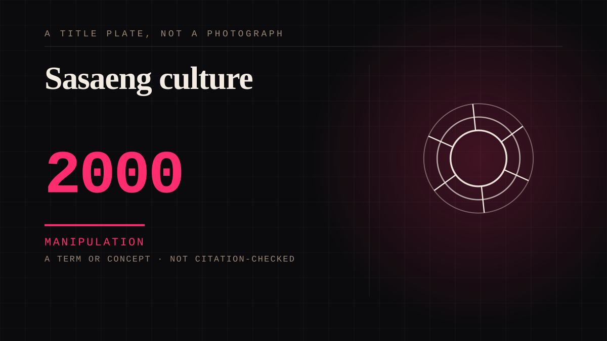

A term or concept · 2000 · Korean fandom
Sasaeng culture
Organised, commercialised intrusion: tracking schedules, buying flight details, intercepting travel, surveilling buildings.

Attachment scaled past the point where it is a private feeling and became an industry with staff and infrastructure. The escalation is not emotional, it is logistical - which is why it emerged as fandom became globally coordinated.
Manipulation. One-sided attachment engineered for somebody else's benefit. Paid intimacy, parasocial persuasion, sasaeng, grief extraction, the streak. The lane that pays the bills and the lane that causes the most harm, frequently at the same time.
Same story, 3 other entries
Convention culture1976 → Forum culture1999 → The sasaeng2000
Where it sits
2000 2000-2009 · 2000 2009
Provenance · 5 source record(s)
- retrievableTHE MECHANISM: fans know far more about the celebrity than the reverse, which lets them disrupt the relationship and gain a temporary sense of power and self-efficacy. Ethnogographic study with interviewsNanyang Business School, NTU Singapore (2017). The Darker Side of K-pop? ↗
- retrievableThe term: sa (private) + saeng (life), intrusion into celebrities' private lives. Behaviour emerges with 1990s K-pop idol groups, not with the digital eraSasaeng fan. Wikipedia. ↗
- retrievableThe law followed the behaviour: the Kim Changwan case, stalked over ten years, produced a 'persistent harassment' offence added to the Minor Offences Act in 2011, revised 2013, and a 2016 bill raising the maximum penaltySasaeng fan. Wikipedia, citing the statute history. ↗
- retrievableA peer-reviewed typology of True Fan / Ani-Fan / Sasaeng, which states that parasocial relationship is central to the Korean pop culture industry and examines its top-down structuring of the fan-object bondThe Spectrum of Fan Attitudes in Korean Culture Industry (2022). ↗
- retrievableThe global parallel: sasaeng behaviour exported, and doxxing as the anglophone equivalent - plus the gendered stigma attached to female fandomKhedun-Burgoine, B. 'How do I Make Oppa Sarang Me?': Resemiotisation and Reconstruction of Meaning in the Global K-pop Fandom. University of Oxford ORA. ↗
Connected · 2 out, 5 in
Reported as a story
It sits in